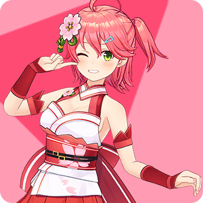
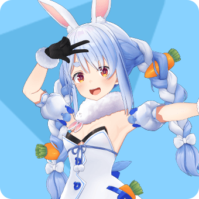
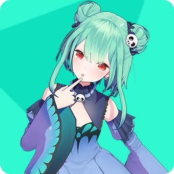
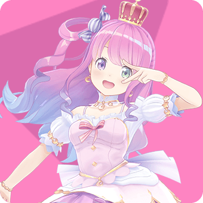
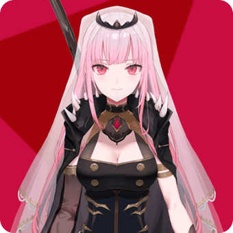
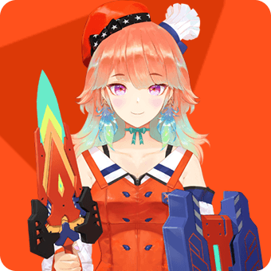
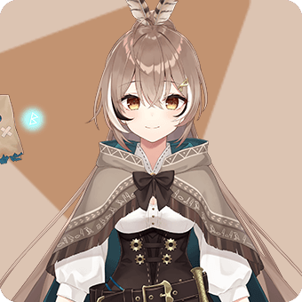

Hololive Japan
Generation 0
-
Tokino Sora
ときのそら
-
Roboco
ロボ子
-

Sakura Miko
さくらみこ
-

Hoshimachi Suisei
星街すいせい
Generation 1
-
Yozora Mel
夜空メル
-
Shirakami Fubuki
白上フブキ
-
Natsuiro Matsuri
夏色まつり
-
Aki Rosenthal
アキ・ローゼンタール
-

Akai Haato
赤井はあと
-
Hitomi Chris
人見クリス
Generation 2
-

Minato Aqua
湊あくあ
-

Murasaki Shion
紫咲シオン
-
Nakiri Ayame
百鬼あやめ
-
Yuzuki Choco
癒月ちょこ
-
Oozaru Subaru
大空スバル
Generation GAMERS
-
Shirakami Fubuki
白上フブキ
-
Ookami Mio
大神ミオ
-
Nekomata Okayu
猫又おかゆ
-
Inugami Korone
戌神ころね
Generation 3
-

Usada Pekora
兎田ぺこら
-

Uruha Rushia
潤羽るしあ
-
Shiranui Flare
不知火フレア
-
Shirogane Noel
白銀ノエル
-

Houshou Marine
宝鐘マリン
Generation 4
-
Amane Kanata
天音かなた
-

Kiryu Coco
桐生ココ
-
Tsunomaki Watame
角巻わため
-
Tokoyami Towa
常闇トワ
-

Himemori Luna
姫森ルーナ
Generation 5
-
Yukihana Lamy
雪花ラミィ
-
Momosuzu Nene
桃鈴ねね
-

Shishiro Botan
獅白ぼたん
-
Mano Aloe
魔乃アロエ
-
Omaru Polka
尾丸ポルカ
Generation 6
-
La+ Darkness
ラプラス・ダークネス
-
Takane Lui
鷹嶺ルイ
-
Hakui Koyori
博衣こより
-
Sakamata Chloe
沙花叉クロヱ
-
Kazama Iroha
風真いろは
Inonanka Music
-
AZKi
Hololive Indonesia
-

Ayunda Risu
アユンダ・リス
-

Moona Hoshinova
ムーナ・ホシノヴァ
-
Airani Iofifteen
アイラニ・イオフィフティーン
-

Kureiji Ollie
クレイジー・オリー
-
Anya Melfissa
アーニャ・メルフィッサ
-

Pavolia Reine
パヴォリア・レイネ
Hololive English
-

Mori Calliope
森カリオペ
-

Takanashi Kiara
小鳥遊キアラ
-

Ninomae Ina'nis
一伊那尓栖
-
Gawr Gura
がうる・ぐら
-

Watson Amelia
ワトソン・アメリア
-

Tsukumo Sana
九十九佐命
-

Ceres Fauna
セレス・ファウナ
-
Ouro Kronii
オーロ・クロニー
-

Nanashi Mumei
七詩ムメイ
-
Baelz Hakos
ハコス・ベールズ
-
Irys
Hololive China
-
Yogiri
夜霧
-
Civia
希薇娅
-
Spade Echo
黑桃影
-
Doris
朵莉丝
-
Rosalyn
罗莎琳
-
Artia
阿媂娅
Holostars
-
Hanasaki Miyabi
花咲みやび
-
Kagami Kira
鏡見キラ
-
Kanade Izuru
奏手イヅル
-
Yakushiji Suzaku
薬師寺朱雀
-
Arurandeisu
アルランディス
-
Rikka
律可
-
Astel Leda
アステル・レダ
-
Kishido Temma
岸堂天真
-
Yukoku Roberu
夕刻ロベル
-
Tsukishita Kaoru
月下カオル
-
Kageyama Shien
影山シエン
-
Aragami Oga
荒咬オウガ